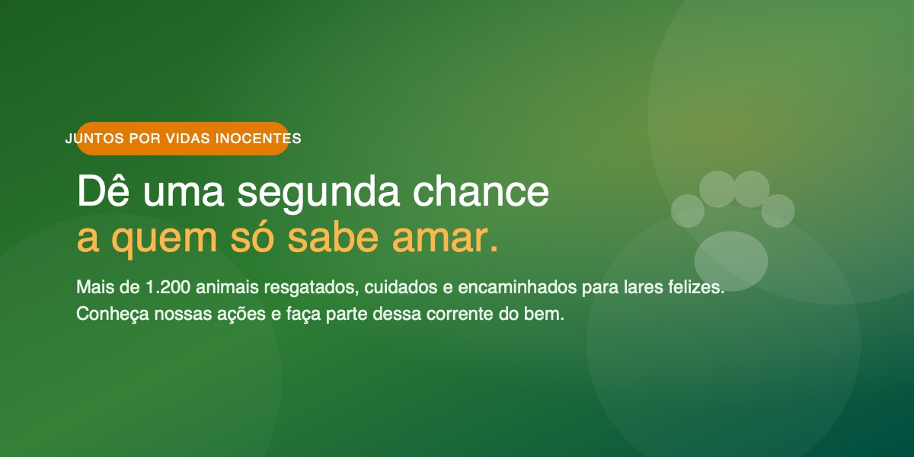
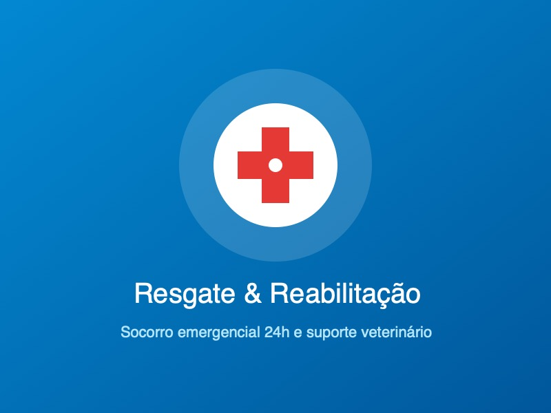
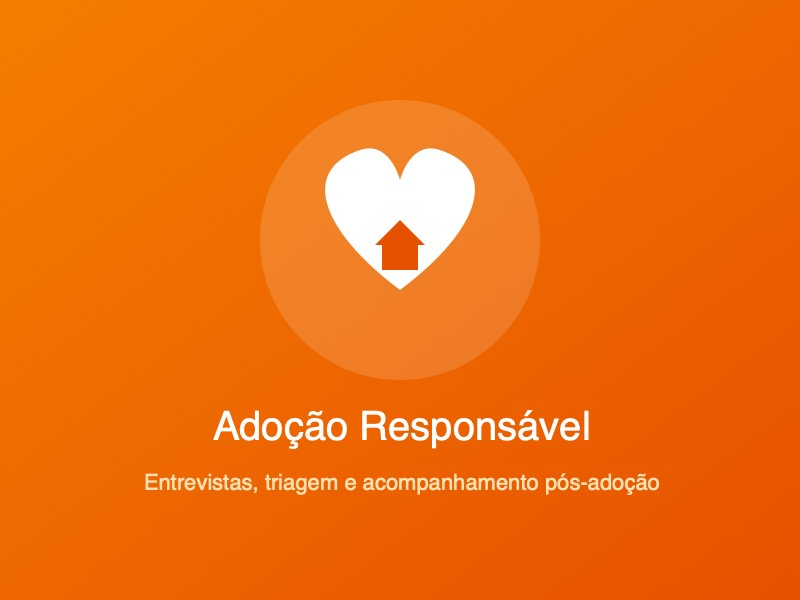
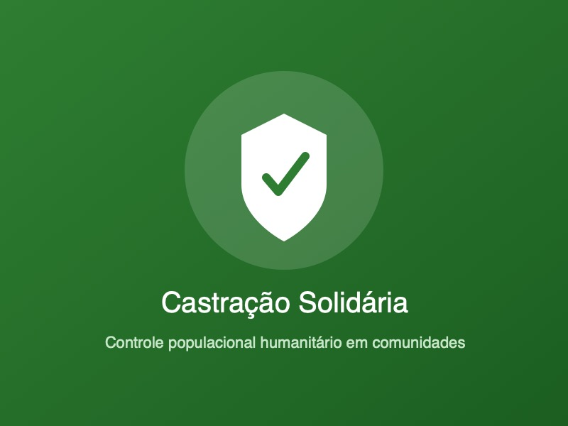

Nossa Missão
Promover resgate, reabilitação e encaminhamento seguro de animais abandonados.
Atuamos no acolhimento, atendimento veterinário e adoção responsável de animais em situação de vulnerabilidade.

Entidade sem fins lucrativos gerida por voluntários em prol do bem-estar animal.
Promover resgate, reabilitação e encaminhamento seguro de animais abandonados.
Construir uma comunidade empática, erradicando os maus-tratos em nossa região.
Ética, respeito à vida, transparência nas doações e solidariedade ativa.
Conheça os projetos permanentes que mantemos com o apoio da comunidade.

Socorro veterinário para animais doentes ou acidentados, com acolhimento integral.
Saiba Mais
Entrevistas orientadas e termo de posse responsável para assegurar um novo lar.
Adotar um Amigo
Mutirões preventivos de esterilização para controle humanitário de natalidade.
Ver AçõesTire dúvidas, envie sugestões ou saiba como participar da nossa causa.